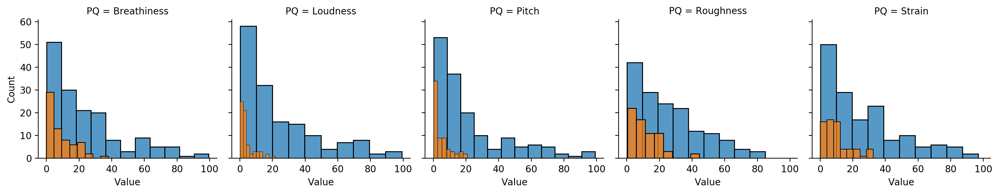
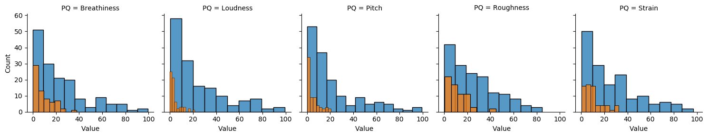

Voice Research #1: Exploring the Perceptual Voice Qualities Database with Pandas and Seaborn
perceptual qualities
voice research
Author
Robin
Published
November 4, 2023
WEE-WOO: This is a work in progress
Another day, another tutorial
Welcome to a blog post about exploring the Perceptual Voice Qualities Database (PVQD). This is based off of a ML + Speech workshop I held in the Berkeley Speech Group in Fall ’23. That workshop and the workbooks are available online if you want to work with the code yourself! If you’re interested in Deep Learning, there’s also some cool stuff in there about working with HuBERT representations of speech data too! The workshop doesn’t assume any knowledge of Pandas, Machine Learning, or Deep Learning, with the focus is more on getting your hands dirty with the tools vs. understanding 100% of what you’re doing.
That said, if you want to learn more about the tools, the repo contains a list of resources for learning more.
Anyways, if I’m linking to that repo, you might be wondering, why write a blog post about it? First, who doesn’t love a bit of redundancy? Second, not everyone is going to want to actually work with the code themselves. I want to communicate and share the stuff I’ve been working on, and generally share the thought processes I have when trying to work with Speech data. This is to get feedback on my work from folks who might not know a lot about data science and machine learning. This is also to serve as a type of onboarding and explanation tool for those interested in conducting voice research with publicly available datasets. Finally, I really, really need just say what I do in plain english!
And the plain English explanation is simple. Or, well, at least short. I use data science and machine learning to study voice and voice modification. I’m particularly interested in possible applications to transgender and gender-diverse voice training.
Why Use Data Science and Machine Learning to Study Voice?
This question deserves an entire post of its own, not to mention a long discussion on the state of research in voice and voice training more generally. Still, any good tutorial requires a motivation, and the oversimplified version is this: When it comes to modifying a voice, both artificially via speech processing and physically via voice training, the current research is lacking. In speech processing, high-level modification of a particular voice is feasible, such as automatically turning a specific masculine voice into a specific feminine voice, but trying to perform lower-level modification of qualities like breathiness, strain, or resonance is either unclear or requires specialized expert knowledge. In the world of voice and voice training, research into Gender-Affirming Voice Care (GAVC) is only really starting to gain traction in Speech Language Pathology, and many of the pedagogies people pursue from online trans voice communities have not been validated experimentally or quantitatively in a formal setting. From an institutional, formal perspective, the effectiveness of behavioral voice modification, and particular approaches and pedagogies, is largely unknown.
There’s perspectives waiting to be studied, methods to be discovered, and misconceptions to be debunked. The collection and analysis of data, combined with the modeling potential of machine learning, can help in those pursuits. How? That’s a topic for a post of its own. For the time being, let’s go ahead and study some perceptual voice qualities.
What are Perceptual Voice Qualities and the PVQD?
Perceptual Qualities Examples
Here’s a list of examples of the perceptual qualities.
What are Pandas and Seaborn?
Preprocessing the PVQD
If you’re interested in studying how voice varies across demographics and vocal health, the PVQD is a great starting point. Not only does the dataset contain ~2hrs of audio from vastly different speakers, the data also comes with demographic information about the speakers as well. Let’s visualize that now.
Code
import numpy as npimport pandas as pdimport matplotlib.pyplot as plt import seaborn as snsplt.rcdefaults() # Defaultdemo_df = pd.read_csv("../../data/pvqd/pvqd_demographics.csv")demo_df.head(5)
Participant ID
Gender
Age
Diagnosis
0
BL01
M
46
NaN
1
BL02
F
76
NaN
2
BL03
F
88
NaN
3
BL04
F
42
NaN
4
BL05
F
75
NaN
We see that the PVQD comes with three pieces of demographic information: the participants’ Gender, Age, Diagnosis. Frustratingly as someone interested in studying transgender and gender-diverse voices, there aren’t that many datasets out there that contain more inclusive labels of gender. Gender, in the vast majority of datasets, is listed as a binary “F” or “M”. In addition to binary labels of gender, from my personal experience, most of publicly available speech datasets do not contain non-cisgender speakers. For the construction of machine learning models that can provide feedback on gender affirming voice training, this is a huge limitation. Machine learning methods often fail to generalize to unseen data, especially when that data is “out of distribution”.
Although we won’t be able to get a complete map of what voice is capable of, we can start to get a rough one. The nice thing about the PVQD is that it does provide us with voices that do exhibit certain qualities we might want to avoid during voice training, such as breathiness and strain. Let’s load in that data while we’re talking about it:
As we said before, the CAPE-V measures perceptual qualities on a 1-100 scale. Since these values are the average of six different raitngs, we get all those decimal places. It’s nice to look at the data like that, to make sure it’s there, but we’re still a bit away from actually learning anything about the data. I’m brushing this part under the rug (see the workshop if you’re curious!), but I’m going to clean up the data and combine the two dataframes so we can start drawing some connections.
Code
### Fix up the demo_df first## Fix Gendercor_gender = {"f": "F","m": "M","female": "F","male": "M"}demo_df["Gender"] = demo_df["Gender"].str.lower().map(cor_gender)## Make Binary Value for Diagnosis# Create a function to apply to the columndef process_diagnosis(diagnosis):if pd.isnull(diagnosis):return np.nanif diagnosis =="N":return"N"else:return"Y"demo_df["Diagnosis "] = demo_df["Diagnosis "].map(process_diagnosis)## We can't visualize nan data, so let's not consider those rows# ~ is a way to invert a numpy array/pandas series of boolean values. A handy trickdiagnosis_df = demo_df[~pd.isnull(demo_df["Diagnosis "])]# Rename column and remote white spacediagnosis_df = diagnosis_df.rename(columns={"Participant ID ": "File"})diagnosis_df["File"] = diagnosis_df["File"].str.upper().str.strip()## Combine the Data# Merge the two dataframes using a left joinmatched_df = pq_train.merge(diagnosis_df, how="left", on="File")matched_df = matched_df[~pd.isnull(matched_df["Gender"])]print("Number of NaN Values: %s"%len(matched_df[pd.isnull(matched_df["Gender"])]))matched_df.head()
Number of NaN Values: 0
File
Breathiness
Loudness
Pitch
Roughness
Strain
Gender
Age
Diagnosis
0
LA7005
7.000000
7.333333
7.000000
8.500000
8.000000
F
52.0
Y
1
PT116
31.833333
12.333333
6.000000
29.500000
7.333333
F
81.0
Y
2
PT034
43.166667
26.666667
61.166667
34.000000
30.333333
F
80.0
Y
3
SJ6006
4.375000
5.125000
0.250000
3.750000
6.875000
F
17.0
N
4
PT005
5.500000
7.000000
12.000000
3.833333
4.500000
F
58.0
Y
Cool! We have our combined dataset that has all the information in one place.
Visualizing the PVQD
Let’s start doing our explorations! The first thing we should figure out is what the age and gender makeup of the dataset looks like.
While there are quite a few young people with diagnosis, we see that healthy older individuals are underrepresented in the dataset, and the majority of those with diagnoses skew older.
From this point on, it’s important to note that I’m only dealing with the training set to avoid biasing the results we find. It is okay to compute statistics about the demographics over the entire dataset, but, since we are hoping to build models that learn the perceptual qualities, performing data exploration with them in the data could possibly bias our findings. To make sure we have a proper test set to evaluate our findings on, we’ll conduct our exploration on the training data.
Let’s go ahead and visualize the relationship between vocal health and the CAPE-V ratings as reported in the PVQD. First, we’ll compute some aggregate statistics between speakers with diagnoses and those without.
Code
# Make sure that the diagnosis_df's File column matches that of pq_traindiagnosis_df["File"] = diagnosis_df["File"].str.upper().str.strip()# Merge the two dataframes using a left joinmatched_df = pq_train.merge(diagnosis_df, how="left", on="File")# Filter out the NaN Examples and Run a Quick Checkmatched_df = matched_df[~pd.isnull(matched_df["Gender"])]assertlen(matched_df[pd.isnull(matched_df["Gender"])]) ==0# Here's a df of the PQs and the diagnosis valuepq_and_diagnosis_df = matched_df[["Diagnosis ", "Breathiness", "Loudness", "Pitch", "Roughness", "Strain"]]# TODO: Calculate the Average, Median, and Max PQ per diagnosispq_and_diagnosis_df.groupby("Diagnosis ").agg(["mean", "median", "max"]).round(2)
Breathiness
Loudness
Pitch
Roughness
Strain
mean
median
max
mean
median
max
mean
median
max
mean
median
max
mean
median
max
Diagnosis
N
8.81
5.50
38.0
4.24
2.94
21.83
4.69
2.33
20.83
11.76
10.17
44.62
9.88
8.21
32.50
Y
24.06
16.17
99.5
24.49
14.67
99.17
22.02
12.17
99.17
25.78
21.50
84.83
26.20
18.17
96.83
This isn’t the prettiest table, but it gets the point across. We see the sort of trends we’d expect. Comparing means and medians across perceptual qualities, we note that voices with diagnoses have higher ratings than those without, with the maximum values for diagnosed speakers across all PQs except roughness being close to 100. If you’re familiar with statistics, you might be wondering if these differences are statistically significant. I leave it as an exercise to the reader to test this question in the associated workbooks! For this exploration, I’m happy enough to note that the difference we’d expect to see is indeed there. The max for non-diagnosed voices is lower, but can vary greatly from PQ to PQ. Breathiness, for example, has a maximum value of 38.0 while loudness has a maximum value of 21.83.
Let’s visualize the distributions to understand if these are flukes or a larger part of the distribution. Orange represents speakers without a diagnosis.
Code
# Same df as before, but going to include the File to make it clearerpq_and_diagnosis_df = matched_df[["File", "Age", "Diagnosis ", "Breathiness", "Loudness", "Pitch", "Roughness", "Strain"]]# Make a Long DataFramelong_df = pd.melt(pq_and_diagnosis_df, id_vars = ["File", "Age", "Diagnosis "], value_vars=["Breathiness", "Loudness", "Pitch", "Roughness", "Strain"], var_name ="PQ", value_name ="Value")# Make a FacetGrid to plot a lot of things all at onceg = sns.FacetGrid(data=long_df, col ="PQ", hue ="Diagnosis ")g.map(sns.histplot, "Value")

Cool! It seems like it kind of is a fluke, with the highest value being around 25-30 for many of the non-diagnosed voices. It would be good to compute different quartiles or a CDF right about now to more rigorously confirm this, but also going to leave this to the curious reader :D
We still haven’t looked at age and these perceptual qualities yet. Let’s go ahead and combine the above plots with an age dimension. Orange again represents voices without a diagnosis.
Code
# Make a FacetGrid to plot a lot of things all at onceg = sns.FacetGrid(data=long_df, col ="PQ", hue ="Diagnosis ")g.map(sns.scatterplot, "Age", "Value")

It’s interesting to note that across PQs there tends to be a slight correlation between age and the perceptual quality, with a few of the PQs, like strain, not having any examples of folks who are younger than 30 with highly strained voices. Some PQs do have examples for younger individuals, but even then it’s not many.
What did we learn?
There’s one main takeaway we walk away with by performing this data exploration: we learn about the data distributions and correlations present in the PVQD data (under our particular set of processing choices). This can tell us about the limits of various modeling approaches we can expect, or failures of generation. For example, if we were to train a model that sought to return a 1-100 value for strain from an individual’s voice, if that individual is young and has a strained voice, our model might not be able to generalize to this new datapoint–possibly returning that the voice is less strained than it actually is. In this case, the model would have too strongly associated strain with age-specific vocal features, instead of learning what strain is across age groups. This visualization and exploration helps point out possible failures of modeling we could expect.
Another takeaway from this exploration is how SLPs label audio data ccording to the CAPE-V protocol. If we wished to incorporate different types of data, or perhaps even learn how to provide CAPE-V ratings ourselves, it’s incredibly important to know the difference between voices with high and low values of a particular perceptual quality. Given that this dataset is primarily concerned with patients with voice disorders, knowing the values that healthy or “typical” voices might have lets us know what PQ values healthy voices in other datasets should have. Generalization is a huge issue for machine learning and deep learning models. Having knowledge about how experts use the CAPE-V protocol across voices facilitates the future collection of more data to mitigate the generalization issue.
In the next post, we’re going to try to and actually model some of these perceptual qualities. Let’s see if we can do as the experts do!